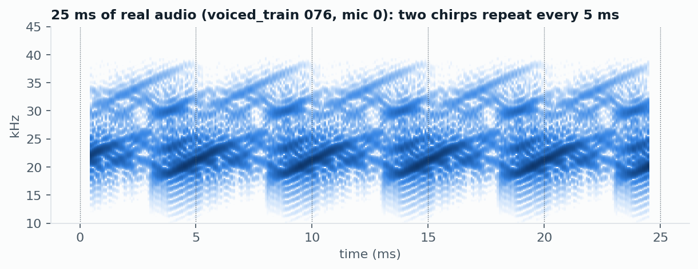
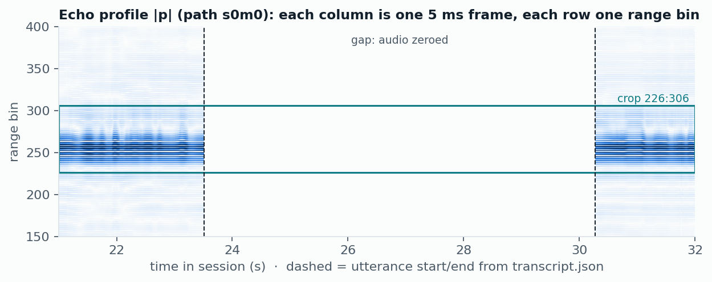
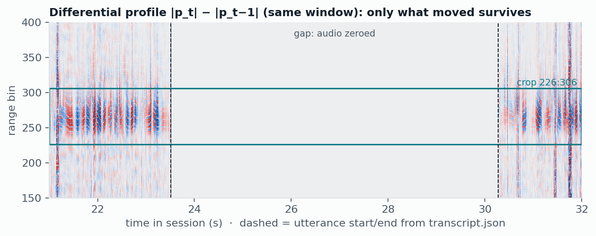
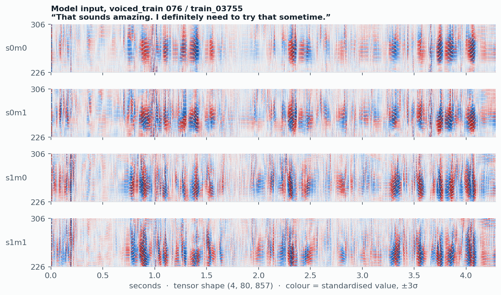
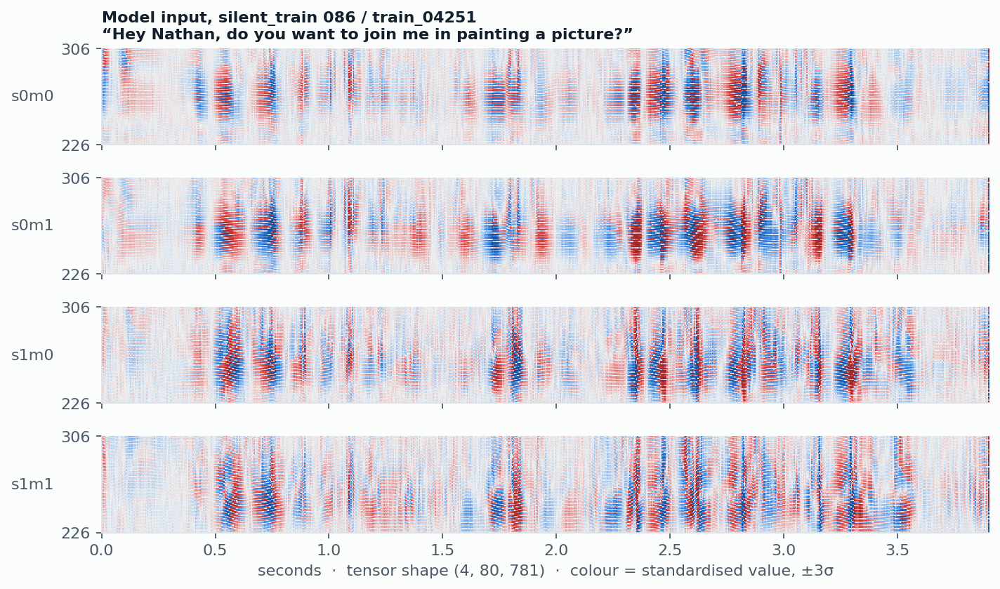

How the SoniSpeech glasses turn mouth movement into numbers, what the dataset looks like on disk, what is wrong with parts of it, and exactly what scripts/preprocess.py will do to produce the input of the ResNet-34 + CTC model.
The glasses carry two small speakers and two microphones. The speakers play inaudible ultrasonic chirps, the sound bounces off the lips, jaw, tongue and cheeks, and the microphones record the echoes. When the mouth moves, the echoes change. The model learns to read text from those changes, with or without any voice.
The whole pipeline, end to end. The vertical line is the most important boundary in the project: everything to its left is computed once and stored in a cache on disk; everything to its right happens freshly for every training batch.
A chirp is a short tone whose pitch sweeps upward. Speaker 0 sweeps 18 → 28 kHz, speaker 1 sweeps 29 → 39 kHz, both above human hearing. Each chirp lasts 500 samples at 100,000 samples per second, which is 5 ms, and then immediately repeats. One chirp period is one frame, so the data has 200 frames per second.

An echo arrives a little later than the sound that caused it. If we know exactly what was sent, we can ask, for every possible delay, "how much of the chirp arrived this late?" That is a cross-correlation: slide the known chirp along the 500 recorded samples and multiply-and-sum at each shift. The result is 500 numbers per frame, one per delay. Each delay step is called a range bin.
One bin is 1 sample = 10 µs. Sound travels about 3.4 mm in that time, so each bin means 3.4 mm more path length. A reflection from something 1 cm further away shows up about 6 bins later (the sound goes there and back).
start_pos, 0–499 samples) so that the strongest peak, the direct path, lands in the middle at bin 250. Everything the face does lies just after it. That is why the spec's original guess of bins 0:80 was wrong: those bins hold room echoes from the previous chirp.Do this for every frame and stack the profiles side by side, and you get an image: time runs left to right (200 columns per second), range runs bottom to top. Here is 11 seconds of real data for one path:

Most of what the echo profile shows never moves: the glasses frame, the nose, the cheek at rest. The useful signal is the change. So the official code subtracts each frame's magnitude from the previous frame's, bin by bin:
diff[t] = |p[t]| − |p[t−1]| (diff[0] = 0)
Static reflections cancel to zero. A reflector moving closer or further shifts energy between bins, which shows up as red (stronger than a moment ago) next to blue (weaker).

One speaker (an author of the paper) recorded 360 sessions of 50 sentences each, taken from the SODA dialogue corpus. Half the sessions are voiced (speaking aloud), half are silent (mouthing without any sound). Each mode has 160 training sessions and 20 evaluation (test) sessions.
transcript.json maps each utterance ID to its time span in the audio:
{
"train_03750": {"start": 2.0, "end": 5.283, "transcript": "I had a nightmare. It was really scary."},
"train_03751": {"start": 5.283, "end": 12.31, "transcript": "Sarah, I'm really sorry about what happened earlier. …"},
…
}
The first utterance always starts at exactly 2.000 s. Utterances are sometimes back to back and sometimes separated by pauses of up to ~20 s; every sample outside an utterance is exactly zero. We confirmed this in all 360 sessions, and that the audio switches on within ±0.5 ms of each transcript start, so the transcript times can be used directly to cut.
| What we measured (all 9 zips) | Voiced | Silent | Paper |
|---|---|---|---|
| Utterances | 9,000 | 9,000 | 18,000 |
| Speech inside utterances | 13.14 h | 13.53 h | 26.7 h |
| Mean utterance length | 5.26 s | 5.41 s | 5.26 / 5.41 s |
| Words per utterance | 14.4 ± 5.3 | 14.4 ± 5.3 | |
| Unique sentences, train / test | 8,004 / 1,000 | 8,000 / 1,000 | |
The dataset is clean overall, but the EDA found a few problems. Some are documented by the dataset authors, some are not. Each has a fixed rule in preprocessing.
| Problem | Where | How we found it | Rule |
|---|---|---|---|
| Duplicated mic 1 (documented). The mic hardware failed late in recording; the authors copied mic 0 onto mic 1, so 2 of the 4 paths are copies. | voiced 150–160 silent 141–160 | Sample-exact ch0 == ch1 in all 31, in no other session | never used |
| Corrupt mic 1 (undocumented). Samples bounce between the int16 extremes, the failure the authors describe, but in sessions not on their list. | voiced 135 (18) silent 126 (8) voiced 149 (3) voiced 004, 010 (1 each) | Any sample-to-sample jump > 30,000; healthy audio never does this | drop utterance |
| Loud transient on both mics at one instant, probably a tap or knock. Physical, not hardware. | silent 001 (1) | Same jump test, both channels together | drop utterance |
| Sentence also in test. One short sentence occurs once in each SODA pool, under different IDs. | voiced + silent 029, train_01446 | Text match against all 1,000 test sentences | drop train copy |
| Typo: "thatDad" (missing space) would become one unknown word. | silent 078, train_03881 | Voiced/silent transcript comparison | fix text |
| Mode-specific wording, e.g. voiced "coat" vs silent "cast": the authors corrected each transcript to what was actually said. | 4 pairs (+1 punctuation) | Voiced/silent transcript comparison | keep both |
eda/drop_list.csv.The paper trains on sessions 1–140 of both modes and reports test WER, without a validation set. We need one to tune settings without touching the test set. Because the session number decides the sentences, validation must take the same session numbers from both modes; otherwise silent validation sentences would be seen in training through the voiced copy.
preprocess.py will do, step by stepShapes are for a typical 5-minute session (≈ 60,000 frames) and a typical 5.3-second utterance (≈ 1,050 frames). Steps 1–4 run the dataset's official code unchanged; matching it exactly is what makes our numbers comparable to the paper.
Read audio.wav, scale int16 to ±1, and filter each mic twice: 17.5–28.5 kHz (speaker 0) and 28.5–39.5 kHz (speaker 1), 5th-order Butterworth.
Correlate against the known chirps over the whole file, find where the strongest echo falls inside a 500-sample frame, and trim the start so it lands at bin 250.
start_pos because step 6 needs it to convert seconds into frame numbers exactly.Cut the signal into 500-sample frames and correlate each frame with its chirp at delays 0–499.
|p[t]| − |p[t−1]| along time, zero for the first frame.
Flatten speakers × mics into channels in the order [s0m0, s0m1, s1m0, s1m1] and keep range bins 226:306.
For each transcript entry: first = ⌊(start·100000 − start_pos) / 500⌋, last = ⌈(end·100000 − start_pos) / 500⌉. Keep the full span.
Skip utterances on the drop list. Apply the one text fix. Mark sessions on the official faulty list (they are cached but never put into a split).
One .npy per utterance as float16, plus a row in manifest.csv: path, mode, session, utterance ID, text, number of frames, split, flags. No normalisation is applied to the stored data.
Mean and standard deviation of each of the 4 channels over all dev-train utterances, saved to stats.json.
Lowercase, strip punctuation (keep in-word apostrophes like don't), and train a SentencePiece Unigram model with 1,000 pieces on the training transcripts. Index 0 is reserved for the CTC blank.
Read the float16 array and apply (x − mean) / std per channel from stats.json.
With probability 0.5, join up to 3 random training utterances end to end, capped at 15 s (3,000 frames), and join their texts with a space.
Zero out 2 random bands of up to 8 range bins and 3 random stretches of up to 40 frames (0.2 s).
Group 16 samples, pad along time to the longest, keep the true lengths for CTC.


| Stage | Shape | Type | Size |
|---|---|---|---|
| Raw audio | 30,000,000 × 2 | int16 | 120 MB |
| Echo profiles (official, in memory) | 2 × 2 × 60,000 × 500 | float64 | 960 MB |
What official main() would write (profiles + diff) | 2 files | float64 | 1.9 GB |
| After crop, full session | 4 × 60,000 × 80 | float16 | 38 MB |
| Cached utterances only (≈ 53,000 frames) | 50 × (4 × 80 × T) | float16 | ≈ 34 MB |
The model treats each sample as a 4-channel image and reads it left to right. The only number it really needs from preprocessing is the length of each sample, because the output is 16 times shorter in time.